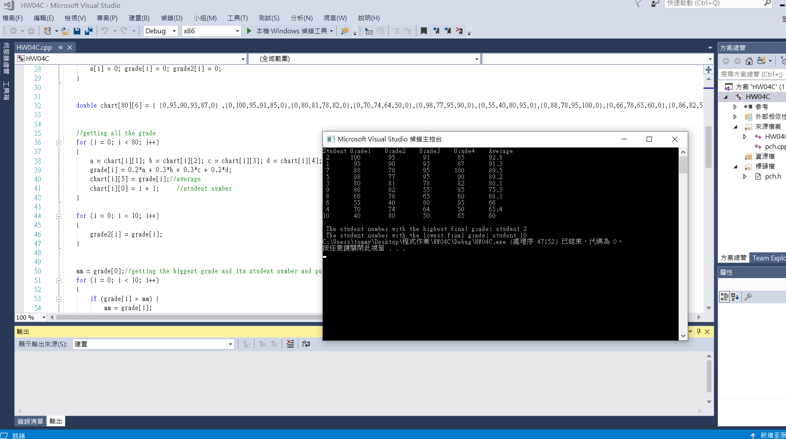

You are asked to write a C++ program that determines student grades at the end of the semester. For each student, identified by an integer number between 1 and N (N ≤ 80), four exam grades must be kept, and the final grade must be computed. The final grade is computed as follows:
Final grade = 0.2 * grade1 + 0.3 * grade2 + 0.3 * grade3 + 0.2 * grade4
Create a two-dimensional list of integer student numbers and grades of each student, and write a function that sort and displays data in the array in decreasing final grade order.

result:
